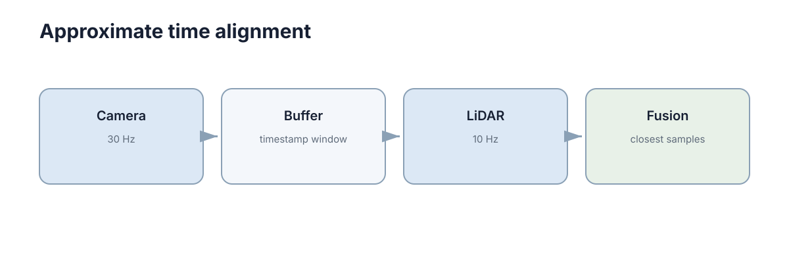

Multi-Modal Perception
多模态感知不是把更多传感器数据堆进一个网络，而是利用不同传感器的互补信息降低单一感知源的盲区。真正的难点往往发生在融合之前：时间、坐标和语义必须先对齐，否则“更多数据”只会变成“更多错误”。 一个 30 ms 的时间偏移在 1.5 m/s 下就是 4.5 cm 的空间错位；一个 0.5° 的外参偏差在 30 m 处就是 26 cm 的投影误差——两者都足以让一个本来正确的目标在融合后“消失”。
因此这一章的推进顺序是反向的：不从融合算法讲起，而是先讲对齐（时间、空间）、再讲标定维护、最后才讲融合层级与失效处理。因为融合的上限由对齐精度决定，而不是由网络结构决定。

不同传感器的优势通常正好互补
相机能提供丰富纹理和语义，但受光照影响明显；LiDAR 提供直接三维几何，却缺少颜色和纹理；IMU 更新快，可以感知短时运动，但积分会漂移。
融合有价值的前提是这些信息真的互补。如果单一传感器已经稳定满足任务，复杂融合反而会增加标定、计算和故障诊断成本。
| 传感器 | 强项 | 弱项 | 失效条件 | 典型频率 |
|---|---|---|---|---|
| 相机 | 纹理、颜色、语义、分类 | 无直接深度、受光照影响 | 逆光、夜间、过曝 | 10–60 Hz |
| LiDAR | 三维几何、量程、测距精度 | 无颜色、稀疏、怕雨雾 | 玻璃、镜面、暴雨 | 10–20 Hz |
| 毫米波雷达 | 测速直接、穿透雨雾 | 角分辨率差、噪点多 | 静态结构、金属多径 | 10–50 Hz |
| IMU | 高频、短时运动、无外部依赖 | 积分漂移、零偏 | 长时间积分 | 100–1000 Hz |
| GNSS | 绝对位置、无漂移 | 遮挡、多路径、更新慢 | 隧道、城市峡谷 | 1–10 Hz |
互补性的量化形式是误差相关性：两个传感器若在同一场景同时失效（例如相机与 LiDAR 都怕玻璃），它们的组合并不能带来冗余，只带来同向的错误。真正有价值的互补，是失效条件尽量不重叠。这也解释了为什么雷达 + 相机在雨天比相机 + LiDAR 更划算。
把互补关系按工况展开，可以直接得到传感器组合的选择依据：
- 白天结构化道路：相机 + LiDAR，语义与几何都可靠，是精度最高的组合；
- 夜间或隧道：LiDAR + 雷达，避免把安全性押在光照上；
- 雨雾天气：雷达 + 相机（若照明可控），LiDAR 的有效量程会显著衰减；
- 室内低速：RGB-D + IMU，量程小但近距精度高、主动结构光对无纹理表面依然有效。
选择组合时还要看成本结构：每增加一个模态，增加的不仅是硬件价格，还有标定、时间同步、算力、故障诊断与维护的长期成本。一个只在极端场景下才能发挥作用、却要在所有场景下都维护的模态，很可能不划算。
时间不同步会把正确数据拼成错误场景
车辆在运动时，相机 \(t=10.00\) s 的图像和 LiDAR \(t=10.15\) s 的点云对应不同物理位置。直接叠加会产生明显错位。
工程上要依赖时间戳、硬件同步或运动补偿，把数据变换到相同参考时刻。三种手段的成本与效果差别很大：
- 硬件触发同步：用同一触发源（如 PPS 或 GPS 秒脉冲）驱动多传感器，抖动可到微秒级，是自动驾驶的常规做法；
- 时间戳对齐 + 插值：依赖各传感器时钟已对齐，用位姿插值把点搬到统一时刻，抖动在毫秒级；
- 纯软件近似：只取“最接近的样本”，时差可达半个采样周期，在低速下勉强可用，高速下不可接受。
关键区分是：“时间戳对齐”解决时钟问题，“运动补偿”解决场景问题。 即使两个传感器时钟完全一致，采集时刻不同造成的场景差异仍然存在，只能靠位姿外推补偿。
时间误差有两种形态，处理方式完全不同：
- 固定偏移（offset）：所有样本都晚一个常数，例如某驱动总把接收时刻当采集时刻。它可以被标定出来并直接减掉，是最容易修的一类；
- 随机抖动（jitter）：每个样本的延迟不同，无法用常数补偿，只能靠减小延迟或提高采样率稀释影响。
实践中两类常常混在一起：先有一个几十毫秒的固定偏移（很常见），再叠加几毫秒的抖动。因此诊断时应当先画“时差随时间的曲线”——若整体抬高但形状平坦，是偏移；若上下跳动，是抖动。
时间对齐的量化要求
时差不是“越小越好”的定性描述，而可以由任务容差反推。设传感器在时刻 \(t_s\) 采集、系统在 \(t_u\) 使用，时差为 \(\Delta t=t_u-t_s\)，速度为 \(v\)，则位置外推误差近似为
若车辆同时有角速度 \(\omega\)，姿态外推误差与由此产生的额外位置误差为
其中 \(r\) 是目标点到旋转中心的距离。注意第二项随半径增长：同样的时间误差，在 5 m 外的影响是 1 m 外的 5 倍。
反过来，给定可容忍误差 \(\epsilon\)，要求的时间同步精度是
| 速度 \(v\) | 可容忍位置误差 \(\epsilon\) | 需要的同步精度 \(|\Delta t|\) | 可行技术手段 | | --- | --- | --- | --- | | 0.5 m/s（室内机器人） | 0.05 m | 100 ms | 软件近似即可 | | 1.5 m/s（慢速配送车） | 0.05 m | 33 ms | 时间戳 + 插值 | | 1.5 m/s | 0.01 m | 6.7 ms | 时间戳 + 插值 + 高帧率 | | 10 m/s（城市道路） | 0.05 m | 5 ms | 需硬件同步 | | 30 m/s（高速） | 0.05 m | 1.7 ms | 硬件同步 + PPS | | 30 m/s | 0.01 m | 0.33 ms | 硬件触发 + 专用时钟 |
这张表是选型与验收的直接依据：先说清任务容差，再决定花多少钱在同步上。 若传感器无法达到所需精度，则必须在算法层补偿——读取采集时刻的位姿做插值，而不是用处理时刻的位姿，细节见 分布式时间与时钟同步 与 ROS 2 与 DDS 中间件。
一个可控的近似对齐实现如下：
def align_pair(cam, lidar, max_gap=0.02):
"""Pick the pair of samples closest in time within max_gap seconds."""
best = None
for c in cam.samples:
d = min(lidar.samples, key=lambda l: abs(l.stamp - c.stamp))
gap = abs(d.stamp - c.stamp)
if gap <= max_gap and (best is None or gap < best[2]):
best = (c, d, gap)
return best # (camera_sample, lidar_sample, time_gap) or None
注意返回 None 时的处理：宁可丢弃这一帧，也不要用超差的配对。很多“融合算法不稳定”的报告，根因是这段代码里没有 max_gap 判断，把 200 ms 前的点云配上了当前的图像。
空间对齐依赖准确外参
融合前需要知道 \(T^{camera}_{lidar}\) 或相应坐标变换。外参偏一点，近处可能看不明显，远处就会产生很大投影偏差。
偏差的放大关系是线性的：角误差 \(\alpha\) 在距离 \(r\) 处造成的横向偏差为
0.5° 的角误差（\(\approx 8.7\times10^{-3}\) rad）在 5 m 处是 4.4 cm，在 30 m 处是 26 cm。这就是为什么“近处对齐好了就以为标定没问题”是危险的结论：近处的容差本身就宽容，检查必须在远距离做。
因此多模态问题出现“框和点云对不上”时，第一步通常不是换融合网络，而是重新检查标定和 TF。诊断顺序建议是：
- 用一个已知几何（标定板、柱子、车道线）检查平移分量；
- 在尽量远处检查旋转分量，因为角误差需要距离放大可见；
- 检查 TF 树中是否有重复发布或时间戳不匹配；
- 以上都通过，再去怀疑融合算法本身。
反过来也可以反算外参需要多准。若要求 30 m 处的投影误差不超过 0.1 m，则容许的角误差为
这个数字是标定验收标准的来源。 很多项目的标定只验证到 5 m 处对齐良好，那只证明了角误差小于 \(1.1^{\circ}\)，离 0.19° 还差一个数量级——这正是“近距离看着都对、远距离全部错位”的量化解释。
外参与标定的维护流程
标定不是一次性动作，而是一条持续运行的流程。典型组成是离线标定 → 在线监测 → 触发重标定。
手眼标定（hand-eye calibration） 解决“传感器与机器人本体之间”的固定变换：让机器人做若干组运动，同时记录关节/位姿与传感器观测，解出 \(AX=XB\) 形式的问题，得到 \(T^{b}_{c}\)。它的精度取决于运动激励是否充分——只做平移或只做小角度旋转，会导致旋转分量不可观。
在线标定（online / targetless calibration） 利用场景自身的几何一致性持续微调外参：把 LiDAR 点投影到图像上，最小化边缘或互信息残差。它不能替代离线标定，但能跟踪缓慢漂移。
漂移监测需要可量化的指标与阈值：
| 监测指标 | 计算方式 | 正常范围 | 告警阈值 | 可能原因 |
|---|---|---|---|---|
| 重投影误差 | 标定板角点的像素残差 | < 0.5 px | > 1.0 px | 外参平移漂移 |
| 点云-图像边缘距离 | 投影点到图像边缘的平均距离 | < 2 px | > 4 px | 外参旋转漂移 |
| 平面一致性残差 | 同一平面在 LiDAR 中的拟合残差 | < 0.02 m | > 0.05 m | 内参或时序问题 |
| 里程计-视觉残差 | 两者位姿增量的差 | 稳定小量 | 趋势性增长 | 时标偏移或外参 |
| 时间标定偏移 | 估计出的固定时差 | |Δt| < 5 ms | > 10 ms | 触发链路延迟变化 |
阈值设计的原则是区分“噪声”与“趋势”：单帧超阈值可能只是瞬时遮挡，连续 N 帧单调增长才是漂移。工程上通常用滑动窗口的中位数而不是瞬时值做判断。
标定漂移的常见诱因是可枚举的：震动、碰撞、温度变化改变结构件尺寸、拆装维修后装回、以及传感器固件升级导致的内部时序变化。后两项常被忽略——固件升级后没有重新标定，是“突然就不准了”的典型来源。
融合可以发生在不同层级
早期融合在较原始特征层组合数据，能充分利用跨模态相关性，但对对齐要求高；后期融合先让各传感器独立产生检测/估计结果，再在决策层合并，更容易模块化和诊断。
三层的本质差别在于“在哪一步把信息压缩成结论”。压缩得越晚（越靠近原始数据），跨模态相关性保留得越多，但对对齐与标定的要求也越苛刻；压缩得越早（越靠近输出），越容易模块化、越容易诊断，但跨模态的细粒度关联已经丢失，无法找回。
以“判断前方是否有一辆自行车”为例：数据级融合会把像素与点云在原始层面对齐后一起送进网络，网络可以利用“这块点云的形状 + 那个像素的颜色”联合推理；决策级融合则先让视觉给出“自行车 0.8”，让几何给出“圆柱形障碍物 0.7”，再在结果层合并。前者可能发现“形状是自行车但颜色是广告牌图案”这类细微线索，后者永远不会——因为这类线索在各自压缩成结论时就已丢失。
各层级的典型实现手段也不同：
- 数据级：把 LiDAR 点投影成前视距离图或高度图，与图像按通道拼接后送入同一网络；或者把图像特征反投影到点云上形成逐点特征；
- 特征级：两个分支各自提取特征，在候选框或体素级完成特征拼接、注意力加权或交叉注意力；
- 决策级：先各自得到框或轨迹，再用 IoU / 距离做关联，最后用贝叶斯更新、投票或加权平均合并置信度。
需要提醒的是：层级的名字描述的是“在哪里合并”，不是“用什么算法”。 同一个网络里也可能同时存在数据级与决策级的合并路径，判断某系统属于哪一层，看它把信息压缩成结论的节点在哪一步。
融合层级对比
选择层级不是偏好问题，而是被对齐能力和任务需求共同约束的工程决策。三层的取舍可以对照如下：
| 层级 | 融合位置 | 信息保留 | 对齐要求 | 鲁棒性 | 计算/标定代价 |
|---|---|---|---|---|---|
| 数据级（early） | 原始点/像素 | 最高，跨模态相关可见 | 极高（像素级） | 低，单模态失效直接污染 | 最高，标定最难 |
| 特征级（mid） | 中间特征/提议框 | 高 | 中（提议级） | 中 | 中，常用折中 |
| 决策级（late） | 检测/估计结果 | 低，已压缩成结论 | 低（对象级） | 最高，可投票可降级 | 最低，最易诊断 |
选择时可以按下面这张决策表逐步排除：
| 约束条件 | 可行的层级 | 理由 |
|---|---|---|
| 时间同步 < 5 ms，标定亚像素 | 数据级、特征级 | 对齐精度足以支撑像素级组合 |
| 时间同步 10–50 ms | 特征级、决策级 | 像素级组合会引入结构性错位 |
| 时间同步 > 50 ms 或未知 | 仅决策级 | 只能在对齐要求最低的层级工作 |
| 算力受限、需实时 | 决策级 | 单模态独立推理，便于裁剪与并行 |
| 必须长期可诊断、可归因 | 决策级 | 每个模态的输入输出可单独记录与复盘 |
| 模态失效需降级运行 | 决策级 | 缺少某模态时仅需移除一个分支 |
| 追求最高精度且工况稳定 | 数据级 | 跨模态信息利用最充分 |
一个实用的判据是“对齐精度能否支撑所选层级”：若时间同步只有 50 ms，就不要做像素级数据融合——你会把错位的像素直接送进网络。反过来，若任务需要极高的位置精度且传感器同步很好，特征级融合常常是精度与成本的平衡点。
实践中真正的系统通常是混合层级：用决策级融合保证鲁棒性（任一模态失效仍可输出），再用特征级融合提升精度（正常工况下更准），并用一致性检查决定当前该信谁。这种混合结构还带来一个隐性好处——决策级分支天然提供了“融合该不该生效”的判据：当两个层级的输出差异持续偏大，说明对齐或标定已不可信，此时应当降级而不是继续融合。
融合系统还必须考虑传感器失效
如果相机暂时过曝，系统是否能只靠 LiDAR 继续低速运行？如果 LiDAR 丢帧，视觉结果是否会被错误的旧点云拖累？真正可靠的融合不只是“多传感器同时在线时更准”，还要能识别哪个输入当前不可信。
失效处理需要显式的降级策略，而不是默认“融合器会自己扛住”：
| 失效模态 | 症状 | 降级行为 | 必须验证的事 |
|---|---|---|---|
| 相机过曝/夜间 | 图像饱和或全黑 | 降速，仅用 LiDAR 几何 | 语义类目标是否仍被检出 |
| LiDAR 丢帧 | 点云时间戳过旧 | 丢弃旧点云，仅用视觉 | 深度估计的误差上界 |
| 外参漂移 | 框与点云持续错位 | 停止融合，降级到单模态 | 是否触发重标定 |
| IMU 零偏突变 | 短时位姿跳变 | 故障隔离，重启估计器 | 位姿协方差是否被正确放大 |
| 时钟跳变 | 时差突然增大 | 冻结融合直到重新同步 | 是否有单调时间保护 |
关键指标是失效检测延迟：从传感器实际失效到系统做出反应的时间。这个延迟乘以速度，就是系统“带着错误认知走了多远”。慢速机器人可以容忍数百毫秒，高速车辆不能。相关机制见 容错与故障处理。
失效检测本身也需要判据，常见信号有三类：
- 数据层信号：时间戳间隔异常、点数为零、图像全黑/饱和、协方差异常增大；
- 一致性信号：两个模态对同一物体位置判断差异持续偏大；
- 模型层信号：分类置信度整体漂移、输出分布与训练分布偏离。
其中一致性信号最难伪造、也最有用：单个传感器的自检容易被欺骗（相机过曝时仍能输出“正常”的图像格式），但两个独立模态在空间上相互矛盾，几乎一定是其中之一出了问题。工程上通常把一致性残差做成一个显式的健康度指标，并把它作为降级触发条件。
降级本身也要设计得有梯度，而不是“要么全开要么全关”：
| 健康度 | 系统行为 | 速度限制 | 必须记录的信息 |
|---|---|---|---|
| 全部模态正常 | 完整融合 | 任务上限 | 常规日志 |
| 单模态性能下降 | 提高该模态权重下限 | 降速 20% | 降级原因与残差 |
| 单模态失效 | 移除该分支，保留其余 | 降速 50% | 失效时刻与持续时间 |
| 关键模态失效 | 进入最小风险策略 | 停车或最低速 | 完整快照供复盘 |
标定也会随时间漂移
相机和 LiDAR 外参并非一次标定后永久不变。震动、碰撞、温度和重新安装都可能让外参慢慢偏移。工程系统应通过重投影误差、特征对齐或周期标定检查这种漂移。
因此多模态融合的维护成本不只在训练模型，还包括长期保证时间同步和空间标定仍然可信。这一点正是多模态系统与单模态系统最本质的差别：单模态的维护是“模型更新”，多模态的维护是“模型更新 + 物理标定 + 时序链路”，后者往往才是长期成本的主要部分。
维护建议写成可执行的清单：每次维修或碰撞后强制重标定；每周自动跑一次标定检查并记录趋势；把标定参数与时间戳一起版本化，便于回溯“哪次变更后开始变差”。
重标定的触发条件应当事先定义清楚，避免“凭感觉决定要不要标”：
- 事件驱动：碰撞报告、传感器拆装、固件升级、结构件更换——一律强制重标定；
- 指标驱动：重投影误差连续 N 帧超过阈值，或残差出现单调增长趋势；
- 周期驱动：无论是否异常，每固定里程或固定运行小时做一次检查。
三类触发条件是互补的，不能只留一种。 只看事件会漏掉缓慢的温漂与振动疲劳；只看指标会漏掉那些一开始就错、但指标“稳定地错”的情况（例如装反了之后残差一直很小）；只看周期会让两次检查之间的窗口过长。
融合前先验证单模态
多模态融合会把各传感器的优点和故障一起带入系统。若单模态输出尚未独立验证，融合后的改善或退化很难归因。测试时应保留关闭某一模态的消融实验，并记录传感器缺失、延迟和错位时的表现。
| 消融实验 | 目的 | 通过判据 |
|---|---|---|
| 仅相机 | 建立视觉基线 | 语义指标可复现 |
| 仅 LiDAR | 建立几何基线 | 几何指标可复现 |
| 相机 + LiDAR | 验证融合增益 | 优于任一单模态 |
| 关掉标定（注入错位） | 验证对齐敏感性 | 性能应显著下降，否则融合未真正生效 |
| 注入固定时差 50 ms | 验证时间敏感性 | 高速场景应可见退化 |
| 单模态随机失效 10% | 验证降级逻辑 | 系统应降速而非失控 |
最后一行常被忽视：在仿真中注入失效比在实车上制造失效安全得多，相关方法见 机器人传感器仿真。只有先在仿真中验证了降级逻辑，实车测试才有意义。
下一步：多模态对齐完成后，点云与图像就构成统一的三维场景表示，回到 深度、三维视觉与点云 补齐几何链路。时间同步的底层机制见 分布式时间与时钟同步，失效与降级策略见 容错与故障处理，仿真中注入失效的方法见 机器人传感器仿真。